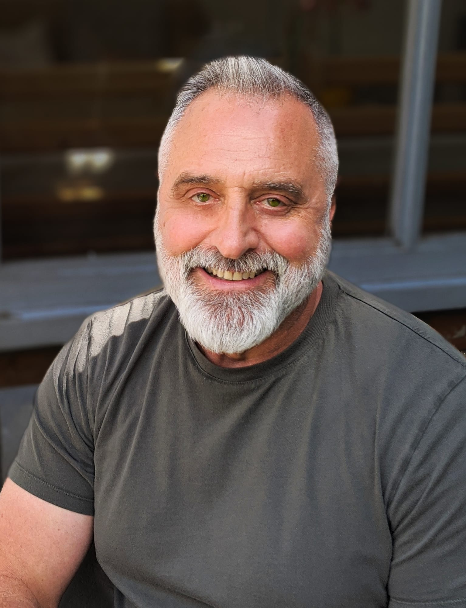

About
About Henri

Art has run through my whole life. As a child I was forever painting and making, nearly burning down the kitchen melting wax for my batik, or hobbling about in handmade leather sandals whose soles I’d never quite stitched on properly.
That restlessness took me to a top fashion school, part of an electric art college buzzing with artists, photographers, textile and jewellery designers. Straight out of training I struck out on my own with my own label, and it took off fast. Those early successes taught me to trust my eye and back my instincts, and every one of those influences still shapes the work I make today.
I’ve always been a voracious reader, losing whole afternoons to encyclopaedias and the art and craft of indigenous cultures around the world. They remain among my greatest inspirations. Animals and nature matter deeply to me, which is why I’m driven to reuse and repurpose: zero waste, and beautiful objects given a second life in the tapestry of our own.
I taught myself to paint in oils, experimenting until I found my voice. Portraits captivate me: a flash of character or creativity that shines through the person or the brushwork, and never grows dull with age. Abstracts pull me in too, landscapes and moods with a depth that draws you inward. The works here span the last seven years, with plenty more to come as I keep growing as an artist.